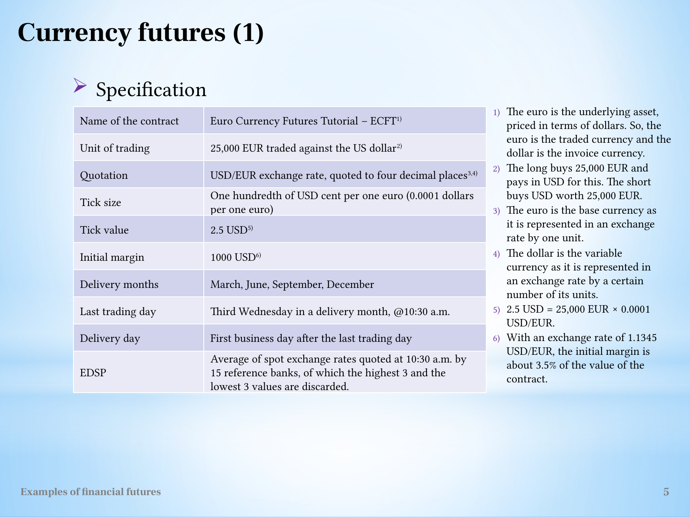

Derive a currency-futures delivery invoice and effective purchase rate
Useful first: Convert futures quotations into payoff and conditional loss bounds
Lesson outline
- 02IntroductionSee the main question, learning objectives and prerequisites.
- 03Key definitions and conceptsGet familiar with the important terms and notation.
- 04Read the contract before calculatingA quotation alone has no monetary meaning until the unit of trading and minimum price increment are known.
- 05ECFT: identify the traded and invoice currenciesThe Euro Currency Futures Tutorial (ECFT) trades EUR 25,000 per contract against the US dollar.
- 06Worked exampleFollow a complete application of the reasoning.
- 07Practise the reasoningWork through written tasks, with optional support and solutions.
- 08Check your reasoning: an offline quizCheck your choices and see feedback without a connection.
- 09Check your understandingReview the key distinctions and check what you can explain.
- 10Test yourself laterTry another prepared question before rereading.
- 11SourcesFind the materials and limits behind the lesson.
Introduction
In this lesson, derive a currency-futures delivery invoice and effective purchase rate.
2.1 What you’ll learn
- Derive a matched physical currency-futures purchase including invoice, cumulative gain and effective rate.
2.2 Before you begin
Check the foundations
Long100 EUR at1.20 USD/EUR, later1.25: signed gain?
Reveal foundation explanation
USD5; \(100\,\mathrm{EUR}\times0.05\,\mathrm{USD}/\mathrm{EUR}\). Otherwise
Key definitions and concepts
- Base currency: The currency amount to be delivered, EUR in the stated USD/EUR contract.
- Invoice currency: The currency used to pay for delivery, USD here.
- Effective purchase rate: Net invoice-currency cost divided by matching delivered base currency.
Read the contract before calculating
A quotation alone has no monetary meaning until the unit of trading and minimum price increment are known. Let \(N\) be the number of contracts, \(\delta\) the tick size in quotation units and \(v\) the money value of one tick. The change from opening quotation \(F_0\) to closing quotation \(F_t\) is \((F_t-F_0)/\delta\) ticks. Thus, before fees and financing effects,
This is a unit conversion: quotation change divided by quotation units per tick, multiplied by currency per tick. The long benefits when the quotation rises. The short benefits when it falls. The lecture's index and currency calculations use the same rule, even though their quoted units and settlement currencies differ.
Margins and marking to market explains why daily transfers telescope to the opening-to-closing difference. Initial margin is a deposit supporting the position, rather than the value of the underlying asset. The tutorial return convention is
where \(M_0\) is initial margin per contract and \(d\) is the holding period in days. This convention explains the large quoted returns: the denominator is margin, not the contract's full exposure.
The annual figure linearly rescales the particular trade; it does not establish a repeatable annual investment outcome.
In calculations using this convention, subsequent margin calls, withdrawals, fees and financing are outside the displayed denominator.
ECFT: identify the traded and invoice currencies
The Euro Currency Futures Tutorial (ECFT) trades EUR 25,000 per contract against the US dollar. The euro is the underlying/traded/base currency. The dollar is the invoice/variable currency. A quotation of \(1.2311\ \mathrm{USD/EUR}\) means that one euro costs 1.2311 dollars. The long receives euros and pays dollars at delivery; the short delivers euros and receives the dollar amount.
One tick is USD 0.0001 per euro, which the source describes as one hundredth of a US cent per euro. Its monetary value is
The EUR units cancel. Initial margin is USD 1,000, about 3.5% of the contract value when the exchange rate is 1.1345 USD/EUR. Delivery months are the same four quarterly months. The last trading day is the third Wednesday of the delivery month at 10:30 a.m.; delivery is the next business day. EDSP averages the rates of 15 reference banks at 10:30 a.m., excluding the three highest and three lowest.

The currency specification keeps quotation units, tick size and margin currency distinct.
5.1 Closing after ten days
The long buys ten contracts at \(F_0=1.2311\) and closes at \(F_{10}=1.2383\). The rise is \(0.0072/0.0001=72\) ticks, giving
The margin return is \(1800/(10\times1000)=18\%\). Simple annual scaling yields \(0.18\times365/10=6.57=657\%\). The gain is in dollars even though the underlying contract size is in euros.
5.2 Physical delivery fixes the effective purchase rate
If the ten contracts remain open until delivery, the long receives EUR 250,000. At EDSP \(1.2401\), the invoice is \(250000\times1.2401=\text{USD }310{,}025\). The opening-to-delivery gain is \(10(2401-2311)(2.5)=\text{USD }2{,}250\). Combining the invoice and the futures gain gives
The long pays the EDSP invoice but has already received offsetting futures gains. This is why the effective purchase price reproduces the opening futures rate in the source's matched delivery example. The ten-day USD 1,800 gain and the delivery USD 2,250 gain describe different exit times and must not be added together. The calculation leaves funding timing and transaction costs outside the illustration.

The source currency timeline and invoice calculation show the alternative closing and delivery paths.
Worked example
Prompt: Hypothetical ECFT: EUR25000 per contract; quote USD per EUR;
tick0.0001, initial margin USD1000 per contract. To buy EUR later you go long 10 at 1.2311.
Alternative A closes at 1.2383 after 10 days; alternative B holds to physical delivery with EDSP 1.2401.
State base/invoice currencies, compute tick value, A \(\mathrm{P/L}\) and margin return (also simple365-day annualisation), \(B\) invoice and cumulative futures gain, net USD purchase cost and effective USD/EUR. Explain sign, matching and costs assumptions, why the paths cannot be combined, and whether the specification/return proves current terms or an underlying yield.
Steps and interpretation: Underlying/base EUR, quote/invoice USD; \(\text{tick}=25000\times.0001=\mathrm{USD}2.50\). Bought amount \(\mathrm{EUR}\,250000\).
A \(G=250000\times (1.2383-1.2311)=\mathrm{USD}1800.000000\); margin \(\mathrm{USD}\,10000\), return \(18\%\), simple annualised \(657\%\). \(B\) \(\text{invoice}=250000\times 1.2401=\mathrm{USD}310025.000000\);
cumulative long \(G=\mathrm{USD}\,2250.000000\). The net purchase cost, invoice minus \(G\), is \(\mathrm{USD}\,307775.000000\).
Dividing by the matching \(\mathrm{EUR}\,250000\) gives the effective price \(\frac{\mathrm{USD}\,307775.000000}{\mathrm{EUR}\,250000}=1.2311\,\mathrm{USD}/\mathrm{EUR}\). The same quantity/currency and settlement endpoint make the algebra cancel EDSP;
funding, fees and basis/contract mismatch are excluded. A closed trade cannot also receive \(B\) held gain.
Increases in USD/EUR raise physical EUR purchase cost and produce a compensating long gain. Collateral return is not the currency asset yield;
hypothetical specifications are not current verified exchange rules.
Practise the reasoning
Write your reasoning before revealing an explanation. Begin with support, then apply the ideas to another situation.
7.1 Written exercise 1
Hypothetical ECFT: EUR25000 per contract;
Solve the following:
- quote USD per EUR;
- tick0.0001, initial margin USD1000 per contract.
- To buy EUR later you go long 2 at 1.2000.
- Alternative A closes at 1.2020 after 5 days;
- alternative B holds to physical delivery with EDSP 1.2050.
- State base/invoice currencies, compute tick value, A \(\mathrm{P/L}\) and margin return (also simple365-day annualisation), \(B\) invoice and cumulative futures gain, net USD purchase cost and effective USD/EUR.
- Explain sign, matching and costs assumptions, why the paths cannot be combined, and whether the specification/return proves current terms or an underlying yield.
Show a hint
Pause before calculating or choosing an explanation:
- What quantities, actors or outcomes are being compared? Write their roles, units and dates beside them.
- Which condition decides whether the relationship applies? Check the relevant definition before using a formula or classifying the case.
- What would have to remain fixed for your comparison to be meaningful? Work through one link in the reasoning at a time.
- How could you check the direction, boundary case or alternative explanation before stating your conclusion?
A local draft for your own study.
Reveal explanation
Key: Underlying/base EUR, quote/invoice USD; \(\text{tick}=25000\times.0001=\mathrm{USD}2.50\). Bought amount \(\mathrm{EUR}\,50000\).
A \(G=50000\times (1.2020-1.2000)=\mathrm{USD}100.000000\); margin \(\mathrm{USD}\,2000\), return \(5\%\), simple annualised \(365\%\). \(B\) \(\text{invoice}=50000\times 1.2050=\mathrm{USD}60250.000000\);
cumulative long \(G=\mathrm{USD}\,250.000000\). The net purchase cost, invoice minus \(G\), is \(\mathrm{USD}\,60000.000000\).
Dividing by the matching \(\mathrm{EUR}\,50000\) gives the effective price \(\frac{\mathrm{USD}\,60000.000000}{\mathrm{EUR}\,50000}=1.2000\,\mathrm{USD}/\mathrm{EUR}\). The same quantity/currency and settlement endpoint make the algebra cancel EDSP;
funding, fees and basis/contract mismatch are excluded. A closed trade cannot also receive \(B\) held gain.
Increases in USD/EUR raise physical EUR purchase cost and produce a compensating long gain. Collateral return is not the currency asset yield;
hypothetical specifications are not current verified exchange rules.
7.2 Written exercise 2
Hypothetical ECFT: EUR25000 per contract;
Solve the following:
- quote USD per EUR;
- tick0.0001, initial margin USD1000 per contract.
- To buy EUR later you go long 3 at 1.1000.
- Alternative A closes at 1.0960 after 12 days;
- alternative B holds to physical delivery with EDSP 1.0920.
- State base/invoice currencies, compute tick value, A \(\mathrm{P/L}\) and margin return (also simple365-day annualisation), \(B\) invoice and cumulative futures gain, net USD purchase cost and effective USD/EUR.
- Explain sign, matching and costs assumptions, why the paths cannot be combined, and whether the specification/return proves current terms or an underlying yield.
A local draft for your own study.
Reveal explanation
Explanation: Underlying/base EUR, quote/invoice USD; \(\text{tick}=25000\times.0001=\mathrm{USD}2.50\). Bought amount \(\mathrm{EUR}\,75000\).
A \(G=75000\times (1.0960-1.1000)=\mathrm{USD}-300.000000\); margin \(\mathrm{USD}\,3000\), return \(-10\%\), simple annualised \(-304.167\%\). \(B\) \(\text{invoice}=75000\times 1.0920=\mathrm{USD}81900.000000\);
cumulative long \(G=\mathrm{USD}\,-600.000000\). The net purchase cost, invoice minus \(G\), is \(\mathrm{USD}\,82500.000000\).
Dividing by the matching \(\mathrm{EUR}\,75000\) gives the effective price \(\frac{\mathrm{USD}\,82500.000000}{\mathrm{EUR}\,75000}=1.1000\,\mathrm{USD}/\mathrm{EUR}\). The same quantity/currency and settlement endpoint make the algebra cancel EDSP;
funding, fees and basis/contract mismatch are excluded. A closed trade cannot also receive \(B\) held gain.
Increases in USD/EUR raise physical EUR purchase cost and produce a compensating long gain. Collateral return is not the currency asset yield;
hypothetical specifications are not current verified exchange rules. All components are required.
7.3 Written exercise 3
Hypothetical ECFT: EUR25000 per contract;
Solve the following:
- quote USD per EUR;
- tick0.0001, initial margin USD1000 per contract.
- To buy EUR later you go long 4 at 1.2500.
- Alternative A closes at 1.2560 after 20 days;
- alternative B holds to physical delivery with EDSP 1.2600.
- State base/invoice currencies, compute tick value, A \(\mathrm{P/L}\) and margin return (also simple365-day annualisation), \(B\) invoice and cumulative futures gain, net USD purchase cost and effective USD/EUR.
- Explain sign, matching and costs assumptions, why the paths cannot be combined, and whether the specification/return proves current terms or an underlying yield.
A local draft for your own study.
Reveal explanation
Explanation: Underlying/base EUR, quote/invoice USD; \(\text{tick}=25000\times.0001=\mathrm{USD}2.50\). Bought amount \(\mathrm{EUR}\,100000\).
A \(G=100000\times (1.2560-1.2500)=\mathrm{USD}600.000000\); margin \(\mathrm{USD}\,4000\), return \(15\%\), simple annualised \(273.75\%\). \(B\) \(\text{invoice}=100000\times 1.2600=\mathrm{USD}126000.000000\);
cumulative long \(G=\mathrm{USD}\,1000.000000\). The net purchase cost, invoice minus \(G\), is \(\mathrm{USD}\,125000.000000\).
Dividing by the matching \(\mathrm{EUR}\,100000\) gives the effective price \(\frac{\mathrm{USD}\,125000.000000}{\mathrm{EUR}\,100000}=1.2500\,\mathrm{USD}/\mathrm{EUR}\). The same quantity/currency and settlement endpoint make the algebra cancel EDSP;
funding, fees and basis/contract mismatch are excluded. A closed trade cannot also receive \(B\) held gain.
Increases in USD/EUR raise physical EUR purchase cost and produce a compensating long gain. Collateral return is not the currency asset yield;
hypothetical specifications are not current verified exchange rules. All components are required.
7.4 Another chance to practise
Fresh narrow check: \(\mathrm{EUR}\,100\) invoice at \(1.40\,\mathrm{USD}/\mathrm{EUR}\), matched long entry \(1.35\).
Solve the following:
- Net purchase cost?
A local draft for your own study.
Reveal explanation
\(\text{Invoice USD }140-\text{gain USD }5=\mathrm{USD}\,135\), effective \(1.35\,\mathrm{USD}/\mathrm{EUR}\); same EUR quantity and no costs assumed.
Check your reasoning: an offline quiz
Choose one answer per question. Check individual answers or check the whole quiz. Each option includes feedback on the reasoning, and everything works offline.
Reveal explanation
25,000 EUR×0.0001 USD/EUR gives 2.50 USD per contract.
Reveal explanation
Invoice uses EDSP; the long gain uses the 0.0090 change on the entire EUR 250,000.
Reveal explanation
Subtract gain from invoice, then divide USD 307,775 by EUR 250,000; retain quotation units.
Check your understanding
An invoice plus a favourable long gain usually signals confusion between cash received and purchase cost. Write invoice as an outflow, gain as an inflow; subtract once, using matching EUR amounts.
- Derive a matched physical currency-futures purchase including invoice, cumulative gain and effective rate.
Test yourself later
Return to these questions after a break, before rereading the explanation. Use a question you have not just viewed.
10.1 Review question 1
Hypothetical ECFT: EUR25000 per contract;
Solve the following:
- quote USD per EUR;
- tick0.0001, initial margin USD1000 per contract.
- To buy EUR later you go long 5 at 1.3000.
- Alternative A closes at 1.2970 after 15 days;
- alternative B holds to physical delivery with EDSP 1.2940.
- State base/invoice currencies, compute tick value, A \(\mathrm{P/L}\) and margin return (also simple365-day annualisation), \(B\) invoice and cumulative futures gain, net USD purchase cost and effective USD/EUR.
- Explain sign, matching and costs assumptions, why the paths cannot be combined, and whether the specification/return proves current terms or an underlying yield.
A local draft for your own study.
Reveal explanation
Explanation: Underlying/base EUR, quote/invoice USD; \(\text{tick}=25000\times.0001=\mathrm{USD}2.50\). Bought amount \(\mathrm{EUR}\,125000\).
A \(G=125000\times (1.2970-1.3000)=\mathrm{USD}-375.000000\); margin \(\mathrm{USD}\,5000\), return \(-7.5\%\), simple annualised \(-182.5\%\). \(B\) \(\text{invoice}=125000\times 1.2940=\mathrm{USD}161750.000000\);
cumulative long \(G=\mathrm{USD}\,-750.000000\). The net purchase cost, invoice minus \(G\), is \(\mathrm{USD}\,162500.000000\).
Dividing by the matching \(\mathrm{EUR}\,125000\) gives the effective price \(\frac{\mathrm{USD}\,162500.000000}{\mathrm{EUR}\,125000}=1.3000\,\mathrm{USD}/\mathrm{EUR}\). The same quantity/currency and settlement endpoint make the algebra cancel EDSP;
funding, fees and basis/contract mismatch are excluded. A closed trade cannot also receive \(B\) held gain.
Increases in USD/EUR raise physical EUR purchase cost and produce a compensating long gain. Collateral return is not the currency asset yield;
hypothetical specifications are not current verified exchange rules. All components are required.
10.2 Review question 2
Hypothetical ECFT: EUR25000 per contract;
Solve the following:
- quote USD per EUR;
- tick0.0001, initial margin USD1000 per contract.
- To buy EUR later you go long 6 at 1.1500.
- Alternative A closes at 1.1515 after 9 days;
- alternative B holds to physical delivery with EDSP 1.1530.
- State base/invoice currencies, compute tick value, A \(\mathrm{P/L}\) and margin return (also simple365-day annualisation), \(B\) invoice and cumulative futures gain, net USD purchase cost and effective USD/EUR.
- Explain sign, matching and costs assumptions, why the paths cannot be combined, and whether the specification/return proves current terms or an underlying yield.
A local draft for your own study.
Reveal explanation
Explanation: Underlying/base EUR, quote/invoice USD; \(\text{tick}=25000\times.0001=\mathrm{USD}2.50\). Bought amount \(\mathrm{EUR}\,150000\).
A \(G=150000\times (1.1515-1.1500)=\mathrm{USD}225.000000\); margin \(\mathrm{USD}\,6000\), return \(3.75\%\), simple annualised \(152.083\%\). \(B\) \(\text{invoice}=150000\times 1.1530=\mathrm{USD}172950.000000\);
cumulative long \(G=\mathrm{USD}\,450.000000\). The net purchase cost, invoice minus \(G\), is \(\mathrm{USD}\,172500.000000\).
Dividing by the matching \(\mathrm{EUR}\,150000\) gives the effective price \(\frac{\mathrm{USD}\,172500.000000}{\mathrm{EUR}\,150000}=1.1500\,\mathrm{USD}/\mathrm{EUR}\). The same quantity/currency and settlement endpoint make the algebra cancel EDSP;
funding, fees and basis/contract mismatch are excluded. A closed trade cannot also receive \(B\) held gain.
Increases in USD/EUR raise physical EUR purchase cost and produce a compensating long gain. Collateral return is not the currency asset yield;
hypothetical specifications are not current verified exchange rules. All components are required.
Sources
Show materials and lesson scope
- L11(ExamplesOfFinancialFutures).pptx, slide 4
- L11(ExamplesOfFinancialFutures).pptx, slide 6
- L11(ExamplesOfFinancialFutures).pptx, slide 5
Numerical and contextual illustrations are hypothetical unless explicitly described as a reported result. Historical data, model assumptions and unresolved source differences retain their stated limits.
These exercises are for self-study. Viewing a prepared item or solution may make that item unsuitable as a fresh check in a tutor chat. This page does not record an assessed learning result.